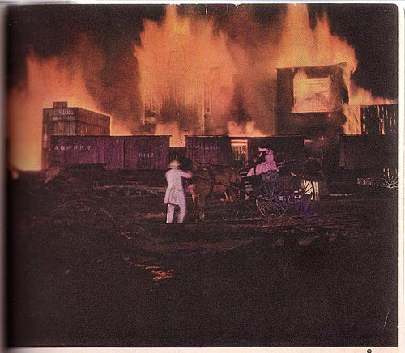

Illustration for Gone with the Wind: Motion Picture Edition
(New York: The Macmillan Company, 1940)
CAPTION: "The narrow street was a dim tunnel, but faintly the hideous red glow of the sky penetrated, and shadows chased one another down the dark way like mad ghosts. The smell of smoke became stronger and stronger. As Rhett jerked the horse's head and turned him into another street a deafening explosion tore the air. 'That must be the last of the ammunition trains.' (See page 144)"